|
Extruded shapes are very common: tubes, pipes, bars, vases, donuts, and ther tricky uses.
An Extrusion node efficiently creates extruded shapes.
The crossSection field specifies the cross-section, and the spine field specifies the sweep path.
The scale and orientation fields specify scaling and rotation at each spine point.
These X3D scenes are adapted directly from the
original VRML 2.0 Sourcebook chapter examples.
Also available:
Introduction to VRML97 SIGGRAPH98 course notes.
|
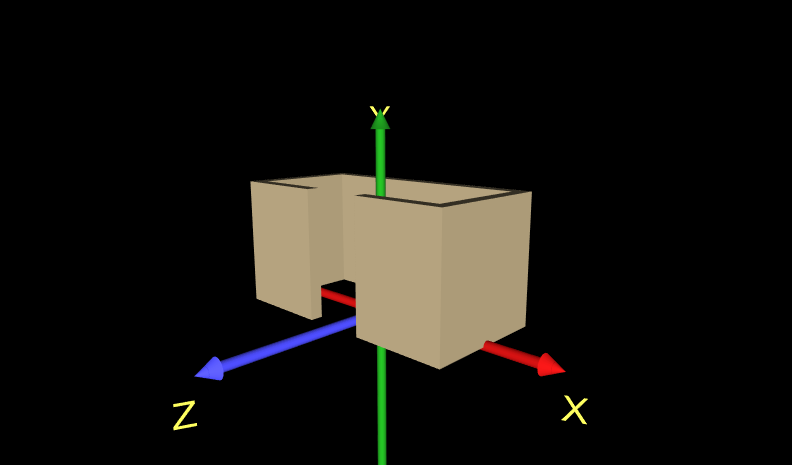
|
![[1] Figure15.07ExtrudedCylinder.x3d - Extruded cylinder](_viewpoints/Figure15.07ExtrudedCylinder.x3d._VP_Extruded_cylinder.png){kind=link}
![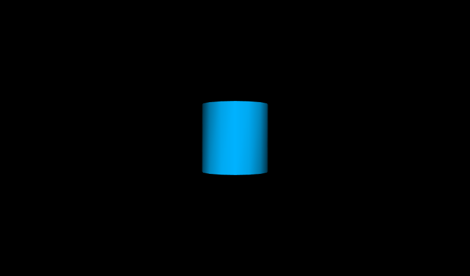[2] Figure15.07ExtrudedCylinder.x3d - (default X3D view from 0 0 10)](_viewpoints/Figure15.07ExtrudedCylinder.x3d._VP_Default_viewpoint.png){kind=link}
![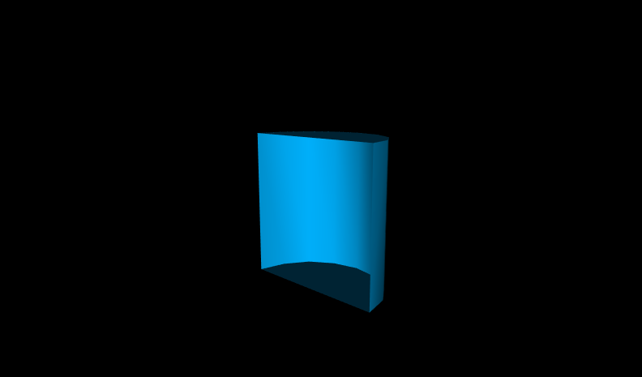[3] Figure15.08ExtrudedHalfCylinderWithCaps.x3d - Extruded half cylinder with end caps](_viewpoints/Figure15.08ExtrudedHalfCylinderWithCaps.x3d._VP_Extruded_half_cylinder_with_end_caps.png){kind=link}
![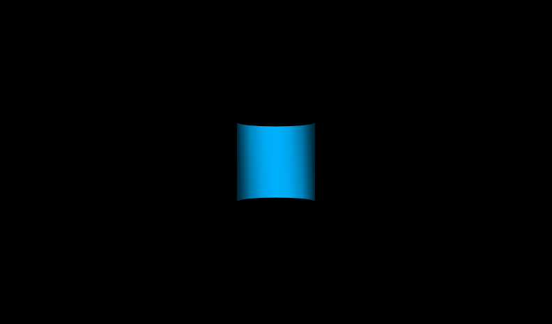[4] Figure15.08ExtrudedHalfCylinderWithCaps.x3d - (default X3D view)](_viewpoints/Figure15.08ExtrudedHalfCylinderWithCaps.x3d._VP_Default_viewpoint.png){kind=link}
![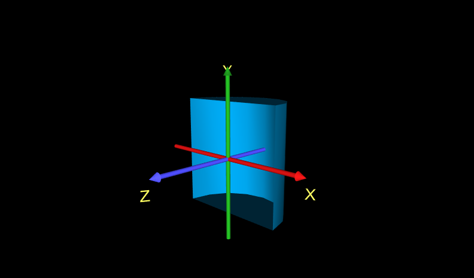[5] Figure15.08ExtrudedHalfCylinderWithCapsWithAxes.x3d - Extruded half cylinder with end caps](_viewpoints/Figure15.08ExtrudedHalfCylinderWithCapsWithAxes.x3d._VP_Extruded_half_cylinder_with_end_caps.png){kind=link}
![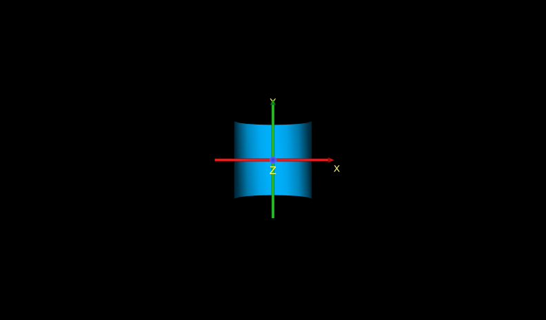[6] Figure15.08ExtrudedHalfCylinderWithCapsWithAxes.x3d -](_viewpoints/Figure15.08ExtrudedHalfCylinderWithCapsWithAxes.x3d._VP_Default_viewpoint.png){kind=link}
![[7] Figure15.09ExtrudedHalfCylinderWithoutCaps.x3d - Extruded half cylinder with end caps](_viewpoints/Figure15.09ExtrudedHalfCylinderWithoutCaps.x3d._VP_Extruded_half_cylinder_with_end_caps.png){kind=link}
![[8] Figure15.09ExtrudedHalfCylinderWithoutCaps.x3d - (default X3D view)](_viewpoints/Figure15.09ExtrudedHalfCylinderWithoutCaps.x3d._VP_Default_viewpoint.png){kind=link}
![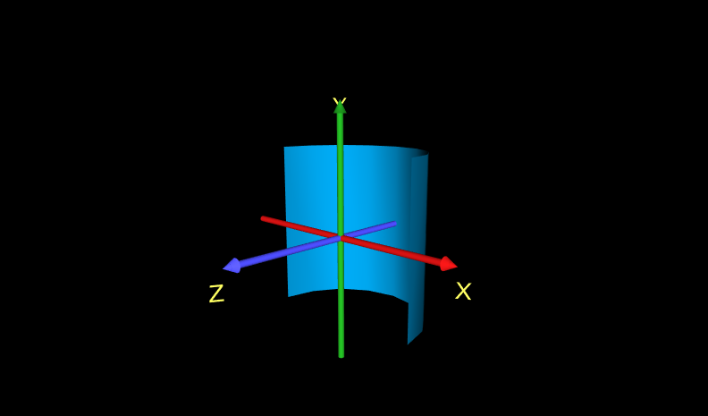[9] Figure15.09ExtrudedHalfCylinderWithoutCapsWithAxes.x3d - Extruded half cylinder with end caps](_viewpoints/Figure15.09ExtrudedHalfCylinderWithoutCapsWithAxes.x3d._VP_Extruded_half_cylinder_with_end_caps.png){kind=link}
![[10] Figure15.09ExtrudedHalfCylinderWithoutCapsWithAxes.x3d -](_viewpoints/Figure15.09ExtrudedHalfCylinderWithoutCapsWithAxes.x3d._VP_Default_viewpoint.png){kind=link}
![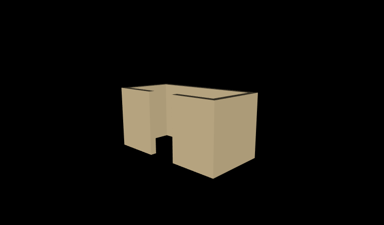[11] Figure15.10ExtrudedRoom.x3d - Extruded room with a doorway](_viewpoints/Figure15.10ExtrudedRoom.x3d._VP_Extruded_room_with_a_doorway.png){kind=link}
![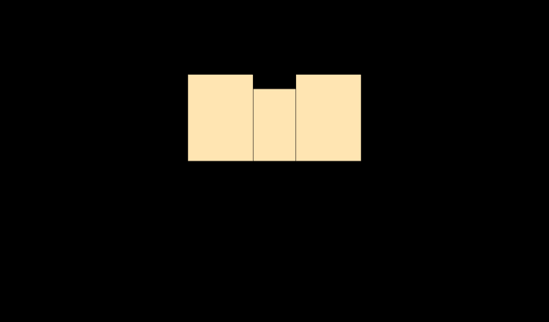[12] Figure15.10ExtrudedRoom.x3d - (default X3D view from 0 0 10)](_viewpoints/Figure15.10ExtrudedRoom.x3d._VP_Default_viewpoint.png){kind=link}
![[13] Figure15.10ExtrudedRoomWithAxes.x3d - Extruded room with a doorway](_viewpoints/Figure15.10ExtrudedRoomWithAxes.x3d._VP_Extruded_room_with_a_doorway.png){kind=link}
![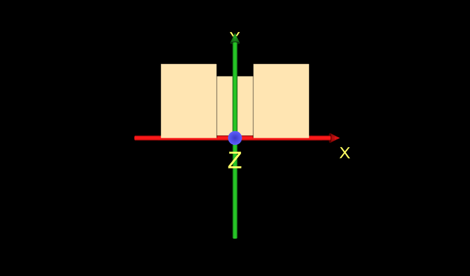[14] Figure15.10ExtrudedRoomWithAxes.x3d - (default X3D view from 0 0 10)](_viewpoints/Figure15.10ExtrudedRoomWithAxes.x3d._VP_Default_viewpoint.png){kind=link}
![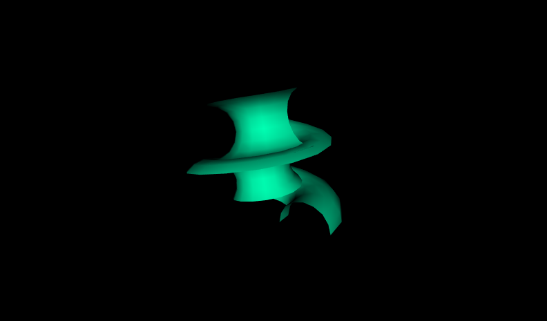[15] Figure15.11ExtrudedPlaygroundSlide.x3d - Extruded playground slide](_viewpoints/Figure15.11ExtrudedPlaygroundSlide.x3d._VP_Extruded_playground_slide.png){kind=link}
![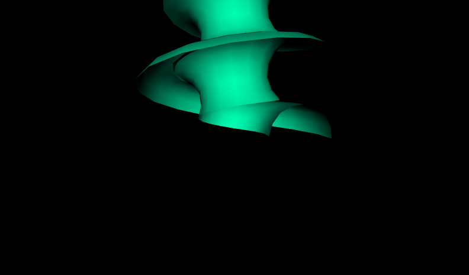[16] Figure15.11ExtrudedPlaygroundSlide.x3d - (default X3D view)](_viewpoints/Figure15.11ExtrudedPlaygroundSlide.x3d._VP_Default_viewpoint.png){kind=link}
![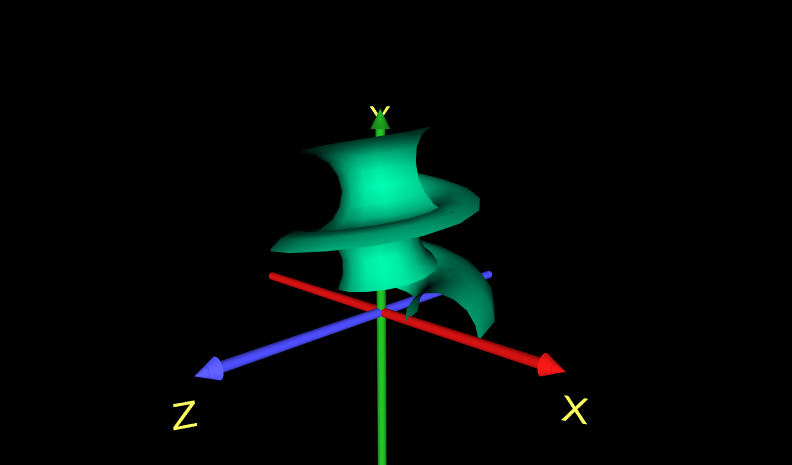[17] Figure15.11ExtrudedPlaygroundSlideWithAxes.x3d - Extruded playground slide](_viewpoints/Figure15.11ExtrudedPlaygroundSlideWithAxes.x3d._VP_Extruded_playground_slide.png){kind=link}
![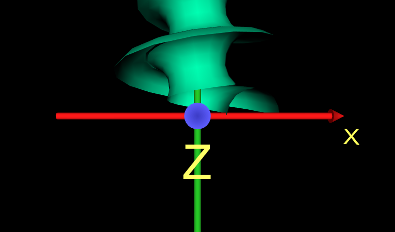[18] Figure15.11ExtrudedPlaygroundSlideWithAxes.x3d - (default X3D view)](_viewpoints/Figure15.11ExtrudedPlaygroundSlideWithAxes.x3d._VP_Default_viewpoint.png){kind=link}
![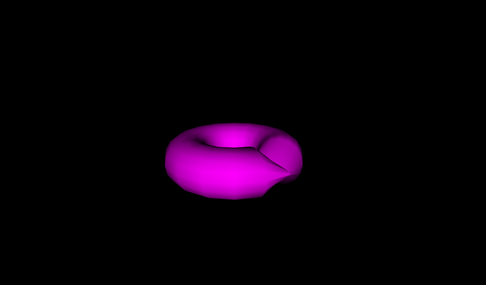[19] Figure15.12Torus.x3d - Torus](_viewpoints/Figure15.12Torus.x3d._VP_Torus.png){kind=link}
![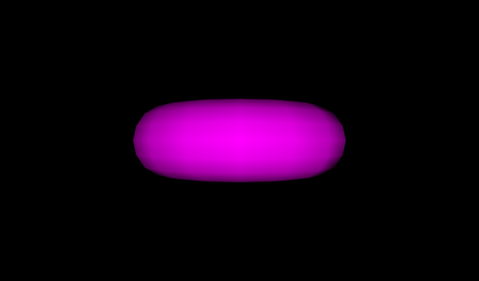[20] Figure15.12Torus.x3d - (default X3D view from 0 0 10)](_viewpoints/Figure15.12Torus.x3d._VP_Default_viewpoint.png){kind=link}
![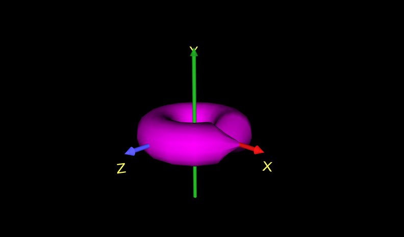[21] Figure15.12TorusWithAxes.x3d - Torus](_viewpoints/Figure15.12TorusWithAxes.x3d._VP_Torus.png){kind=link}
![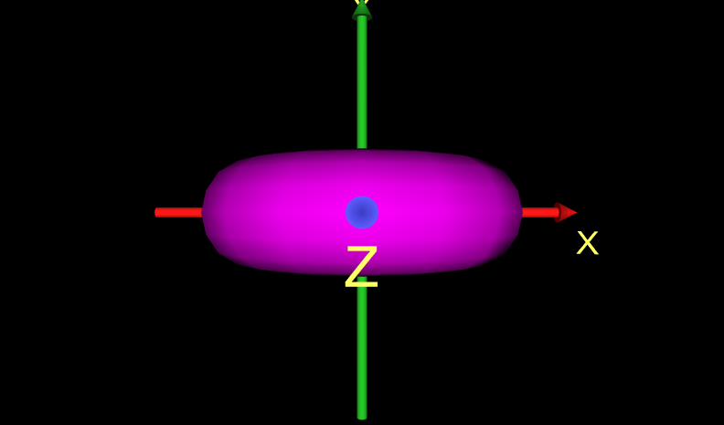[22] Figure15.12TorusWithAxes.x3d - (default X3D view from 0 0 10)](_viewpoints/Figure15.12TorusWithAxes.x3d._VP_Default_viewpoint.png){kind=link}
![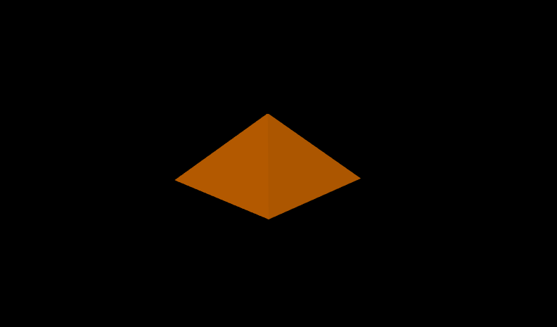[23] Figure15.13ExtrudedPyramid.x3d - Extruded pyramid](_viewpoints/Figure15.13ExtrudedPyramid.x3d._VP_Extruded_pyramid.png){kind=link}
![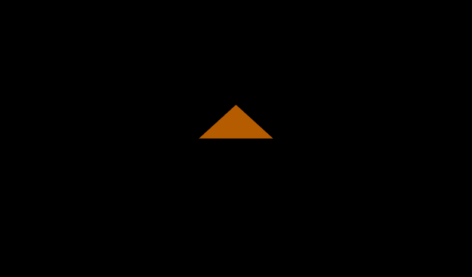[24] Figure15.13ExtrudedPyramid.x3d - (default X3D view from 0 0 10)](_viewpoints/Figure15.13ExtrudedPyramid.x3d._VP_Default_viewpoint.png){kind=link}
![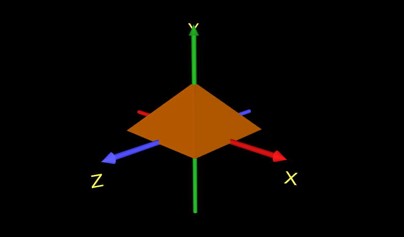[25] Figure15.13ExtrudedPyramidWithAxes.x3d - Extruded pyramid](_viewpoints/Figure15.13ExtrudedPyramidWithAxes.x3d._VP_Extruded_pyramid.png){kind=link}
![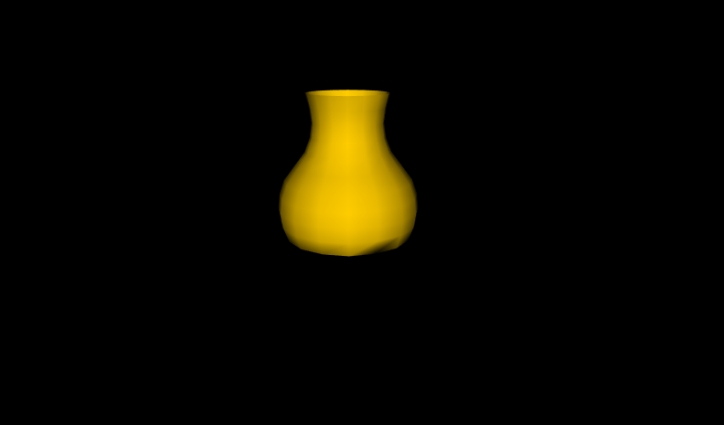[27] Figure15.14ExtrudedVase.x3d - Extruded vase](_viewpoints/Figure15.14ExtrudedVase.x3d._VP_Extruded_vase.png){kind=link}
![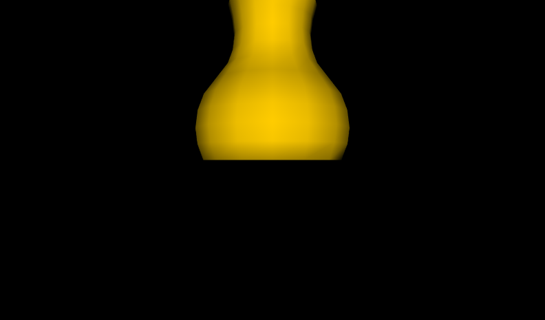[28] Figure15.14ExtrudedVase.x3d - (default X3D view from 0 0 10)](_viewpoints/Figure15.14ExtrudedVase.x3d._VP_Default_viewpoint.png){kind=link}
![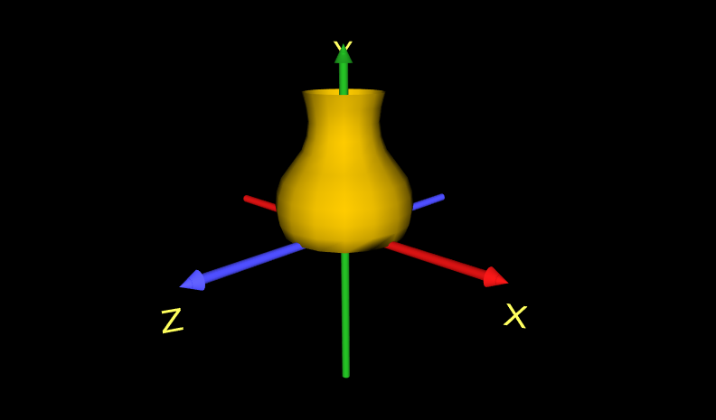[29] Figure15.14ExtrudedVaseWithAxes.x3d - Extruded vase](_viewpoints/Figure15.14ExtrudedVaseWithAxes.x3d._VP_Extruded_vase.png){kind=link}
![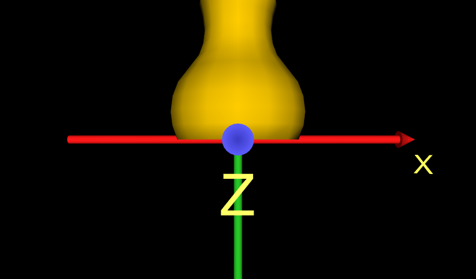[30] Figure15.14ExtrudedVaseWithAxes.x3d - (default X3D view from 0 0 10)](_viewpoints/Figure15.14ExtrudedVaseWithAxes.x3d._VP_Default_viewpoint.png){kind=link}
![[31] Figure15.15TwistedBar.x3d - Twisted bar using extrusion orientations](_viewpoints/Figure15.15TwistedBar.x3d._VP_Twisted_bar_using_extrusion_orientations.png){kind=link}
![[32] Figure15.15TwistedBar.x3d - (default X3D view from 0 0 10)](_viewpoints/Figure15.15TwistedBar.x3d._VP_Default_viewpoint.png){kind=link}
![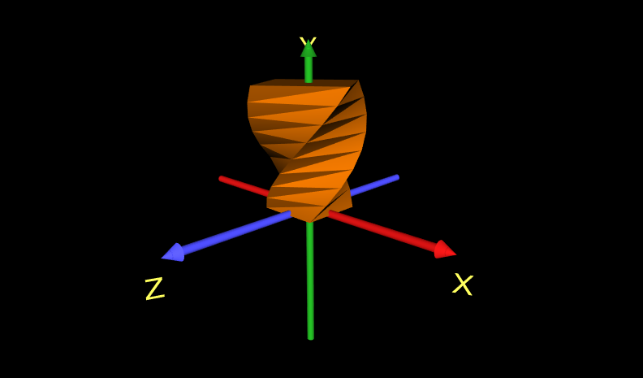[33] Figure15.15TwistedBarWithAxes.x3d - Twisted bar using extrusion orientations](_viewpoints/Figure15.15TwistedBarWithAxes.x3d._VP_Twisted_bar_using_extrusion_orientations.png){kind=link}
![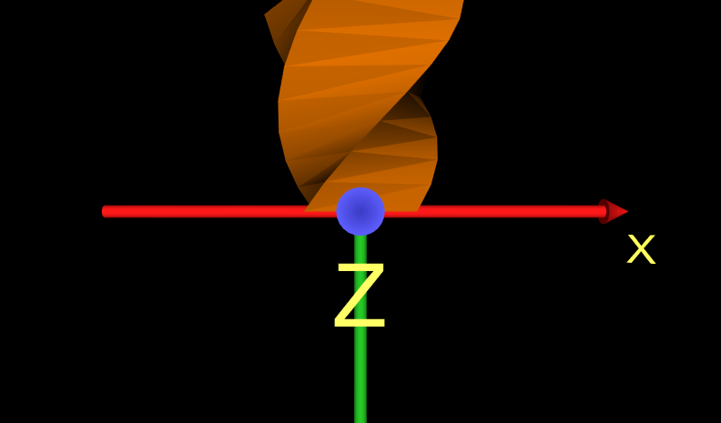[34] Figure15.15TwistedBarWithAxes.x3d - (default X3D view from 0 0 10)](_viewpoints/Figure15.15TwistedBarWithAxes.x3d._VP_Default_viewpoint.png){kind=link}
![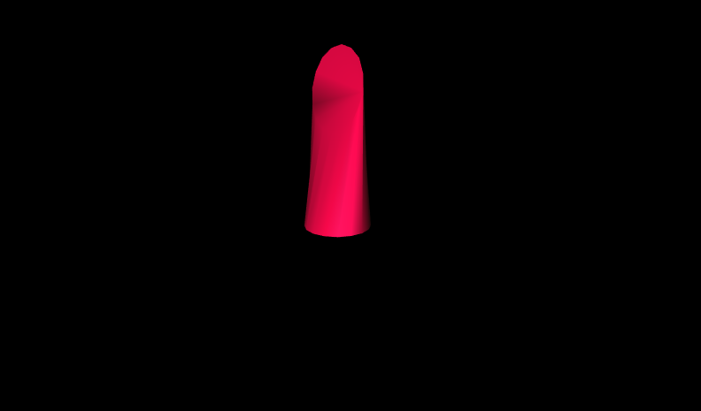[35] Figure15.16ExtrudedLipstick.x3d - Lipstick using extrusion orientation](_viewpoints/Figure15.16ExtrudedLipstick.x3d._VP_Lipstick_using_extrusion_orientation.png){kind=link}
![[36] Figure15.16ExtrudedLipstick.x3d - (default X3D view from 0 0 10)](_viewpoints/Figure15.16ExtrudedLipstick.x3d._VP_Default_viewpoint.png){kind=link}
![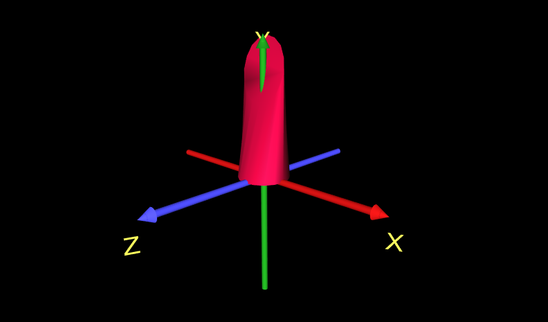[37] Figure15.16ExtrudedLipstickWithAxes.x3d - Lipstick using extrusion orientation](_viewpoints/Figure15.16ExtrudedLipstickWithAxes.x3d._VP_Lipstick_using_extrusion_orientation.png){kind=link}
![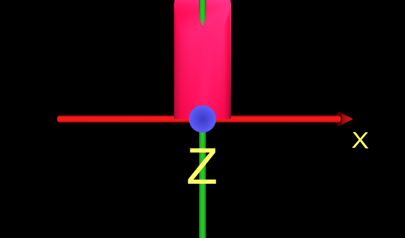[38] Figure15.16ExtrudedLipstickWithAxes.x3d - (default X3D view)](_viewpoints/Figure15.16ExtrudedLipstickWithAxes.x3d._VP_Default_viewpoint.png){kind=link}
![[39] Figure15.17WigglingSnake.x3d - Wiggling snake, seen from behind, using Extrusion and OrientationInterpolator](_viewpoints/Figure15.17WigglingSnake.x3d._VP_Wiggling_snake,_seen_from_behind,_using_Extrusion_and_OrientationInterpolator.png){kind=link}
![[40] Figure15.17WigglingSnake.x3d - Snake head](_viewpoints/Figure15.17WigglingSnake.x3d._VP_Snake_head.png){kind=link}
![[41] Figure15.17WigglingSnake.x3d - (default X3D view from 0 0 10)](_viewpoints/Figure15.17WigglingSnake.x3d._VP_Default_viewpoint.png){kind=link}
![[42] Figure15.17WigglingSnakeWithAxes.x3d - Wiggling snake, seen from behind, using Extrusion and OrientationInterpolator](_viewpoints/Figure15.17WigglingSnakeWithAxes.x3d._VP_Wiggling_snake,_seen_from_behind,_using_Extrusion_and_OrientationInterpolator.png){kind=link}
![[43] Figure15.17WigglingSnakeWithAxes.x3d - Snake head](_viewpoints/Figure15.17WigglingSnakeWithAxes.x3d._VP_Snake_head.png){kind=link}
![[44] Figure15.17WigglingSnakeWithAxes.x3d - (default X3D view from 0 0 10)](_viewpoints/Figure15.17WigglingSnakeWithAxes.x3d._VP_Default_viewpoint.png){kind=link}